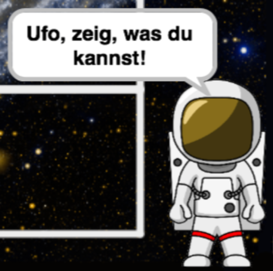
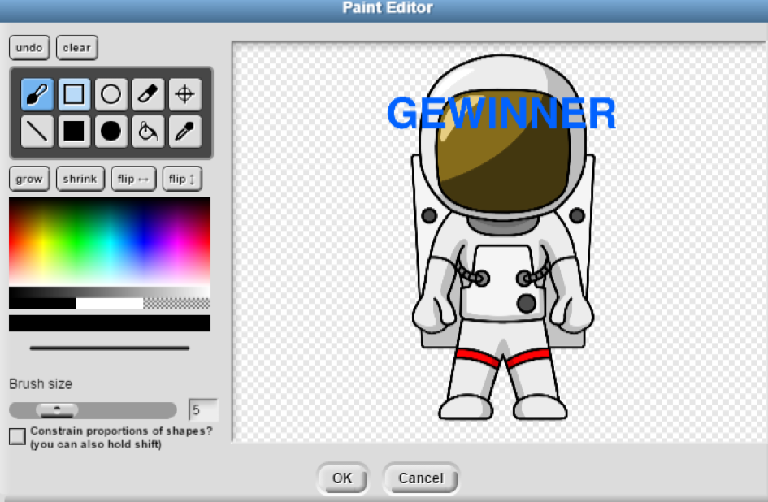

Wir wählten als unseren Hintergrund eine Galaxie. Dort soll das Tic-Tac-Toe Spiel stattfinden.

Da unser Tic-Tac-Toe Spiel im Welltall stattfindet, begrüßt eine Rakete (Sprite1) den Spieler.
Für den zweiten Sprite, welcher das Tic-Tac-Toe Spielfeld zeichnet, nahmen wir einen Saturn.
Passend zu der Galaxie, ist Spieler eins (Sprite3) ein Ufo.

Spieler zwei (Sprite4) ist ein Astronaut.

Gewinnen kann Spieler eins oder Spieler zwei…

Gewinnt Spieler eins, erscheint ein Ufo mit dem Schriftzug „Gewinner“.

Gewinnt Spieler zwei, so erscheint ein Astronaut mit dem Schriftzug „Gewinner“.

Gewinnt keiner der Spieler, so erscheint (passend zum Weltall) ein Alien, mit dem Schriftzug „Gleichstand“.